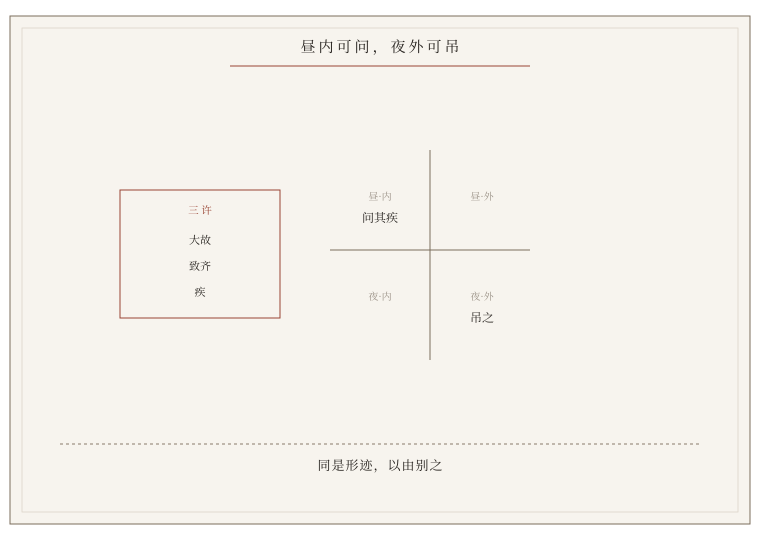

檀弓上 · 三·四十一 · 第 244 课
夫昼居于内，问其疾可也；夜居于外，吊之可也。是故君子非有大故，不宿于外；非致齐也，非疾也，不昼夜居于内。注「似有疾」「似有丧」「大故谓丧忧」「内，正寝之中」。
说什么事：从一个人的居处，读他的状态。
落在哪一层：礼，兼及礼意。论「居处之常与异」。
为何编在此位：上节论毁身之罪，此节论居处之节。身之毁、居之异，皆非言语所能自掩。
【经】夫晝居於內，問其疾可也；夜居於外，弔之可也。是故君子非有大故，不宿於外；非致齊也，非疾也，不晝夜居於內。
【注】似有疾。似有丧。大故谓丧忧。内，正寝之中。
【疏】此一节论君子居处当合于礼。郑云「似有丧」，此注兼云忧者，以其文云「大故」，语意既宽，非独丧也，故《周礼》每云「国有大故」，皆据寇戎灾祸。身既有忧而夜在于外者，既忧祸难，不暇入内；或与臣下外人夜里在外图谋祸患。此谓中门外也，故礼：斩衰及期丧，皆中门外为庐垩室，是有丧夜居中门外也。平常无事之时，或出或入，虽昼居于外亦有入内，虽夜居于内亦有出外时；唯致齐与疾，无间昼夜，恒居于内，故云「非致齐也，非疾也，不昼夜居于内」。恐内是燕寝，故云「正寝之中」。必知正寝者，以其经云非致齐不居于内；致齐在正寝，疾则或容在内寝，若危笃亦在正寝。《祭统》云：「君致齐于外，夫人致齐于内。」对夫人之寝为外内耳。
昼居于内 白天闭在室内。常人之常是昼在外。
夜居于外 夜里宿在外面。常人之常是夜在内。
问其疾 问他的病。注「似有疾」。
吊之 吊其丧。注「似有丧」。
大故 注「谓丧忧」。疏兼寇戎灾祸。
宿于外 过夜于外。疏指中门外之庐垩室。
致齐 祭前斋戒。齐，侧皆反。
正寝 注「内，正寝之中」。疏辨其非燕寝。
白天居在室内，就可以问他是否生病；夜里宿在外面，就可以吊他。所以君子非有大故，不在外过夜；若非致齐、非有疾，不昼夜都居在室内。
此节从形迹立论。常人之常：昼在外，夜在内。昼而闭户，非病即隐；夜而在外，非丧即忧。故礼教人不待其自言，先观其居处。后一半转入正说：两个「非」字立出常道——不宿于外，不昼夜居于内；又留出三个可异之由——大故、致齐、疾。有了这三个由，异处才成消息；无这三个由，异处便是失礼。
第一层 昼内夜外为异 此为常识，而为礼之所据。礼不是凭空立节，是先把人之常勾出，然后以常观异。昼在外者，营其业；夜在内者，安其身。反之，则其中必有事。
第二层 问与吊 见其异，则问、则吊。此二事皆非先问其故，是先至其侧。礼于人之困，不许等人开口。故「可也」二字最宽：不是必问必吊，是可问可吊——目之所见，即心之所动。
第三层 三由 大故（丧忧寇戎）、致齐、疾。此三者为唯二之许。许者，非宽假，是立界：有此三，则虽昼夜居内、虽宿于外，皆不为失礼；无此三，则同是昼夜居内、宿于外，便是失礼。同一形迹，以由别之。
第四层 大故兼丧忧 注只云「丧」，疏申之：语意既宽，非独丧，《周礼》「国有大故」皆据寇戎灾祸。此见注疏之互补：注举其重者，疏补其全者。若只作丧看，则「大故」二字太狭。
与今日何干 不问而知的关切。看一个人白天是否闭门、夜里是否在外，比问他「你怎么了」更早、更真。此节也给了反向的尺：若无大故、非齐非疾而昼夜闭户，则其人有事，而其事故意不使人知。
| 左 | 右 |
|---|---|
| 昼居于内 | 似有疾，可问 |
| 夜居于外 | 似有丧，可吊 |
| 昼在外、夜在内 | 人之常 |
| 非有大故，不宿于外 | 常道之一 |
| 非致齐、非疾，不昼夜居于内 | 常道之二 |
| 大故、致齐、疾 | 三许 |
| 大故兼丧忧寇戎 | 注举其重，疏补其全 |
画一座宅院的正寝，视点略高。正寝居中，门窗分明；院墙外左侧一片空地，右侧一间小小的草庐靠着中门。画面分昼夜两半：左半光线偏暗，右半偏明。三个人影：一人在正寝中白日坐卧、一人在草庐外夜里坐着、一人立在门外阶上作探望状。不写文字、不画人面细节。赭色只用在草庐的立柱与窗纸的一格上。
